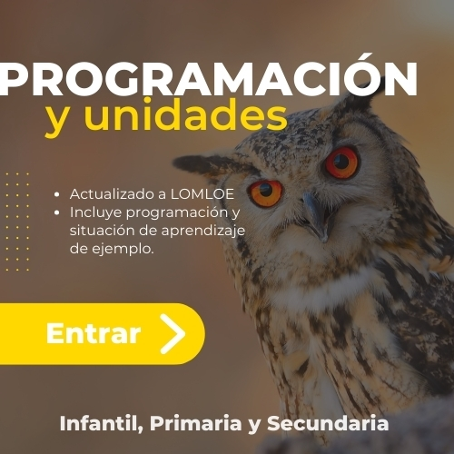

Definición de objetivos didácticos
Los objetivos de la programación didáctica LOMLOE son los resultados que esperamos lograr una vez completado el proceso de aprendizaje. Son parte esencial tanto de la programación como de sus unidades. En este artículo veremos la definición de objetivos didácticos y cómo redactarlos en la programación didáctica.
Qué son los objetivos didácticos o educativos
Definición de objetivos según los nuevos currículos LOMLOE
Los nuevos currículos para Infantil, Primaria, ESO y Bachillerato, desarrollados a partir de la LOMLOE, establecen una nueva definición para los objetivos curriculares:
Objetivos: Logros que se espera que el alumnado haya alcanzado al finalizar la etapa y cuya consecución está vinculada a la adquisición de las competencias clave y de las competencias específicas.
Proyecto de real decreto por el que se establece la ordenación y las enseñanzas mínimas de la Educación Infantil y Proyecto de real decreto por el que se establece la ordenación y las enseñanzas mínimas de la Educación Primaria.
Ejemplos de objetivos de aprendizaje
Como puedes leer en las leyes educativas, corresponde al Gobierno poner unos objetivos de etapa y de materia. Vamos a ver algunos ejemplos de estos objetivos educativos:
Educación Infantil
c) Adquirir progresivamente autonomía en sus actividades habituales.
LOMLOE/ Proyecto de real decreto por el que se establece la ordenación y las enseñanzas mínimas de la Educación Infantil.
Educación Primaria
a) Conocer y apreciar los valores y las normas de convivencia, aprender a obrar de acuerdo con ellas de forma empática, prepararse para el ejercicio activo de la ciudadanía y respetar los derechos humanos, así como el pluralismo propio de una sociedad democrática.
LOMLOE y Proyecto de real decreto por el que se establece la ordenación y las enseñanzas mínimas de la Educación Primaria .
Educación Secundaria
i) Comprender y expresarse en una o más lenguas extranjeras de manera apropiada.
LOMLOE/ Proyecto de real decreto por el que se establece la ordenación y las enseñanzas mínimas de la Educación Secundaria Obligatoria
Formación Profesional
f) Trabajar en condiciones de seguridad y salud, así como prevenir los posibles riesgos derivados del trabajo.
LOMCE
¿Dónde encuentro estos objetivos didácticos?, puedes preguntarte. Los currículos de cada etapa tienen un artículo dedicado a los objetivos. Ahí tienen la lista con todos ellos. Pero, si quieres ahorrar tiempo, encontrarlos mucho más fácilmente y tenerlos listos para copiar y pegar en tu programación, te recomiendo ir a VírgulaYapp. Con seleccionar nivel y materia en que quieres programar, tienes todos los elementos curriculares listos para llevar a tu programación (objetivos, competencias clave y específicas, saberes básicos, etc.). Sin saltos de línea, sin cambios de letra ni erratas. Suena bien, ¿verdad?
Cómo redactar objetivos de la unidad didáctica
Ahora que sabes cuál es la definición de objetivos didácticos, debes establecer unos objetivos de aprendizaje específicos para tus unidades didácticas. Si ves los ejemplos anteriores, todos los objetivos están formulados en infinitivo. ¿Por qué verbos en infinitivo? Porque es una acción que hay que llevar a cabo: trabajar en condiciones de seguridad, adquirir autonomía, comprender y expresarse en más de una lengua. Es decir, la primera regla es redactar los objetivos didácticos en infinitivo.
Verbos para redactar objetivos de aprendizaje
Aquí te dejamos algunos verbos que puedes usar para formular tus objetivos:
- definir
- describir
- enumerar
- identificarreconocer
- explicar
- calcular
- seleccionar
- deducir
- resumir
- predecir
- diferenciar
- diseñar
- defender
- esquematizar
- traducir
- interpretar
- determinar
Formulación de objetivos educativos
Lo primero que has de tener en cuenta es que la evaluación va a tener como referencia el logro de objetivos. Por tanto, debes concretar mucho. Por ejemplo, «conocer los estilos artísticos a lo largo de la historia» es un objetivo muy amplio, difícil de evaluar. Lo que podemos hacer es redactar varios objetivos más específicos: «enumerar las distintas vanguardias históricas», «describir las principales características del surrealismo en pintura» o «conocer a los impulsores del cubismo en España». ¿Ves la diferencia? Estos son objetivos específicos, mucho más concretos y, por ello, fáciles de evaluar. ¿Ha enumerado el alumno las distintas vanguardias históricas estudiadas en clase? Sí/No. Fácil.
El segundo punto, lógicamente, se relaciona con los contenidos. ¿Qué es lo más importante del tema que estás tratando? ¿Qué es imprescindible que los alumnos aprendan? Siguiendo con el ejemplo anterior, si estudiamos el Surrealismo, lo que quiero es que sepan identificar un cuadro surrealista y puedan leerlo. Para ello, deben conocer, como decíamos antes, las principales características del movimiento artístico.
El tercer punto tiene que ver con la coherencia. Debe haber armonía entre todos los elementos del currículo. Los objetivos son el principio y el fin del proceso de enseñanza-aprendizaje. Es un círculo cerrado. A principio de curso aspiramos a conseguir unos objetivos y a final de curso vemos si los hemos alcanzado. Cuanta más coherencia haya en tu programación didáctica, más calidad tendrá.
Aprende a diseñar un programación didáctica con estrategia



Hola Anabel,
si nuestra comunidad autonoma no especifica los objetivos especificos para la materia, podemos utilizar los que se definen en el Real Decreto 1631/2006?
un saludo,
Muchas gracias
Es una disposición derogada. Debes usar los criterios de evaluación.
Hola, 12 de octubre 2021
Estoy programando para este curso con la Lomloe y necesito saber si se siguen poniendo los objetivos didácticos en las unidades. Gracias
Hola, Lina. Sí, ahora mismo, sí.
Buenas, al hilo de la pregunta sobre Objetivos Didácticos. Anteriormente (al menos en Andalucía en Primaria) en muchos centros se asociaban los Indicadores de Evaluación a lo que se consideraba hace tiempo como «Objetivos Didácticos» (pues como tales, no existen, tenemos objetivos a nivel de etapa y de área)…tras la publicación de la Orden 15 enero 2021, en la que ya no hablamos de indicadores sino de Estándares de Aprendizaje Evaluables, ¿Qué tendríamos en cuenta? Pues los anteriores Indicadores eran PRESCRIPTIVOS, ahora los estándares son ORIENTADORES….¿?
Un saludo y gracias por su atención:)
Hola, Juan. Debes tener en cuenta la normativa vigente en el momento en que se convocan las oposiciones.
Buenas, los objetivos didácticos para la programación se formulan teniendo en cuenta los criterios de evaluación (hablo de Andalucía)?? Un saludo
Sí
Hola.. En primer lugar, agradecerles todo el contenido.
Estoy preparando una unidad didáctica en la Comunidad de Madrid y quería saber donde puedo encontrar los objetivos didácticos referentes a cada unidad.
En el caso de que no se especifiquen los objetivos, ¿debería elaborarlos o debería copiar los criterios de evaluación?
Muchas gracias de antemano.
Hola, Carlos! Debes crearlos tú.
Buenos días:
Podemos decir, sea cual sea la comunidad autónoma en la que vivamos, que tenemos los siguientes tipos de objetivos:
1. Objetivos generales de Etapa (Primaria) –> dados por la LOMLOE
2. Objetivos didácticos de área para la Etapa (Matemáticas de Primaria) –> aparecen en la normativa autonómica o hay que redactarlos a partir de los Criterios de Evaluación.
3. Objetivos didácticos de área para el curso (Matemáticas de 5º EP) –> se pueden derivar de los anteriores y, en algunas áreas, coincidirían casi al 100 %.
4. Objetivos de aprendizaje específicos ¿o educativos? de cada unidad didáctica. –> se concretan a partir de los anteriores, pero, de manera práctica, vendrían a coincidir con los indicadores de logro (concretados, a su vez, a partir de los estándares de aprendizaje evaluables, orientativos, a partir de la LOMLOE, se viva en la comunidad que se viva).
¿Es correcto? Muchas gracias.
Correcto. Salvo la última parte. Los objetivos de aprendizaje no son iguales a los indicadores; sí podrían ser equivalentes a los criterios de evaluación. Los indicadores de logro son los distintos niveles de consecución de un estándar o criterio (cuando los estándares desaparezcan).
Por ejemplo (un ejemplo muy simplificado):
Objetivo –> aprender a multiplicar por 2
Criterio de evaluación –> Realiza correctamente multiplicaciones con la tabla del 2
Indicadores de logro del criterio anterior –> Sí, siempre / Sí, a veces / Casi nunca / No
Buenas tardes,
Estoy realizando las unidades didácticas integradas para primaria en Andalucía.
Los objetivos que establezco, guiada por los criterios de evaluación para cada UDI
¿serían objetivos de aprendizaje u objetivos didácticos? No sé si son lo mismo o hay diferencias entre ellos. Gracias 🙂
Ahora se llaman objetivos de aprendizaje.
Buenas tardes,
estoy realizando una unidad didactica sobre los tiempos pasados (perfetco, indefinido e imperfecto). Tenéis algunos ejemplos sobre este tema?
Muchas gracias de antemano
Claudia
Hola, me gustaría me indicases donde puedo mirar para hacer la programación didáctica para Enseñanzas profesionales de Artes Plásticas y Diseño/ en Grabado y estampación, además de una unidad didáctica para este año.
No tengo claro que me sirva la legislación que se tenía el año pasado que son los vídeos que os ví (la página del ministerio está diferente y leyes o LOMLOE)
También si me indicais después, que es lo que tengo que comprar para que me la reviseis (veo secundaria y fp)
Estoy haciendo programación didáctica para FP pero sigo sin tener clara la relación entre los objetivos y las competencias?
un objetivo contribuye a alcanzar una competencia? o al contrario?
gracias
Hola, Pilar! Van de la mano. Los objetivos son metas y las competencias, destrezas. Muchas veces los enunciados dicen lo mismo pero al revés. Lo que contribuye al logro de objetivos y competencias son los contenidos y la metodología.
Hola, muchas por el contenido que nos compartes es de gran utilidad. Una pregunta estoy preparando una programación de FO concretamente para el módulo de EIE , me puedes decir cómo puedo hacer referencia a los objetivos didácticos?
Muchas gracias, Zulma